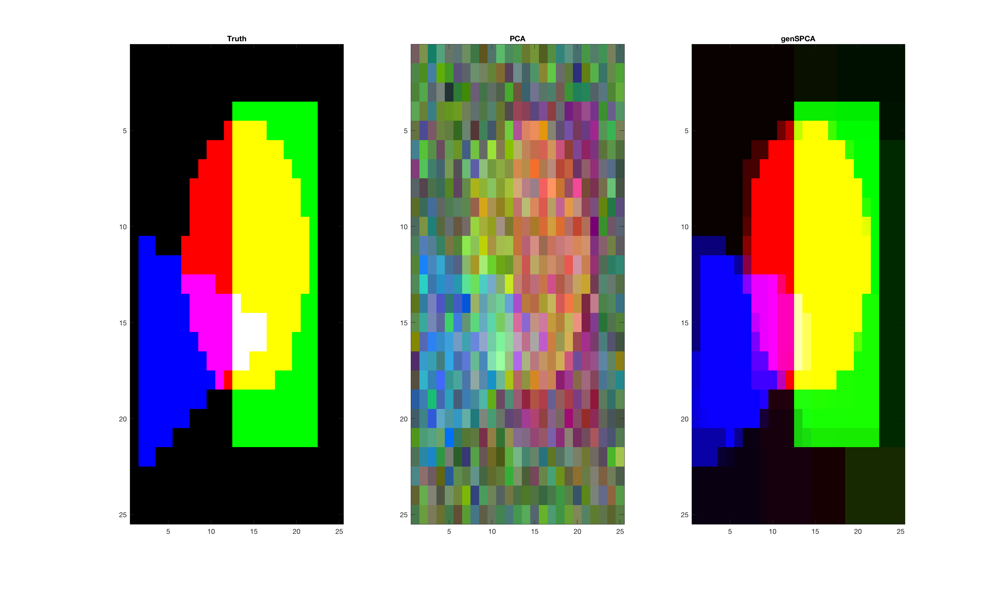

clear; clc; close all;
rng(123)
disp('This example construct a picture with three overlapping pieces')
disp('... puts structured noise (T = T + k1*randn(size(T))')
disp('... and random noise X = X + k2*randn(size(X)) on the data')
nx = 25; ny = 25;
x = linspace(1,100,nx);
y = linspace(1,100,ny);
X = repmat(x',length(y),1);
Y = repmat(y,length(x),1); Y = Y(:);
cnt = [45 55];
r = 30;
T = zeros(length(X),1);
T(((X - cnt(1)).^2 + (Y-cnt(2)).^2)<r^2 ) =1;
T1 = T;
corners = [10 50; 85 90];
T = zeros(length(X),1);
T(X>corners(1,1) & X<corners(2,1) & Y>corners(1,2) & Y<corners(2,2)) = 1;
T2 = T;
shg
corners = [ 40 5; 60 70; 90 5];
id = 1:2;
b = (corners(id(2),2)-corners(id(1),2))/(corners(id(2),1)-corners(id(1),1))
a = corners(id(1),2) - b*corners(id(1),1);
E1 = Y<a + b*X;
id = [1 3];
b = (corners(id(2),2)-corners(id(1),2))/(corners(id(2),1)-corners(id(1),1))
a = corners(id(1),2) - b*corners(id(1),1)
E2 = Y>a + b*X;
id = 2:3;
b = (corners(id(2),2)-corners(id(1),2))/(corners(id(2),1)-corners(id(1),1))
a = corners(id(1),2) - b*corners(id(1),1)
E3 = Y<a + b*X;
T = zeros(length(X),1);
T(E1 & E2 & E3) = 1;
T3 = T;
TT = [T1 T2 T3];
Tm = reshape(TT,length(x),length(y),3);
D = mk2dgradient(ny,nx);
p = 30;
P = randn(3,p);
E = randn(size(TT,1),p);
Tn = randn(size(TT));
DataSignal = TT*P;
DataStructNoise = 0.3*Tn*P;
DataWhiteNoise = E*0.6;
Data = DataSignal + DataStructNoise + DataWhiteNoise;
varComp = [trace(DataSignal'*DataSignal) trace(DataStructNoise'*DataStructNoise) trace(DataWhiteNoise'*DataWhiteNoise)]
varCompprc = varComp/sum(varComp)
round(varCompprc*100)
[u s v] = svds(Data,3);
r= permutereflect(P',v,1);
u = u*r.Q';
u = u*diag(sign(mean(u)));
Um = reshape(u,length(x),length(y),3);
for i=1:3;
xx = squeeze(Um(:,:,i));
xx = xx - min(xx(:));
xx = xx/max(xx(:));
Um(:,:,i) =xx;
end
res = genSPCA(Data',D,3,1.5,'svd','dual');
r = permutereflect(P',res.loads{1},1);
Vm = res.loads{2}*r.Q';
Vm = Vm*diag(sign(mean(Vm)));
Vm = reshape(Vm,length(x),length(y),3);
for i=1:3;
xx = squeeze(Vm(:,:,i));
xx = xx - min(xx(:));
xx = xx/max(xx(:));
Vm(:,:,i) =xx;
end
This example construct a picture with three overlapping pieces
... puts structured noise (T = T + k1*randn(size(T))
... and random noise X = X + k2*randn(size(X)) on the data
b =
3.2500
b =
0
a =
5
b =
-2.1667
a =
200
varComp =
1.0e+03 *
9.7225 3.3614 6.7728
varCompprc =
0.4896 0.1693 0.3411
ans =
49 17 34
figure;
subplot(1,3,1); image(Tm); title('Truth')
subplot(1,3,2); image(Um); title('PCA')
subplot(1,3,3); image(Vm); title('genSPCA')
